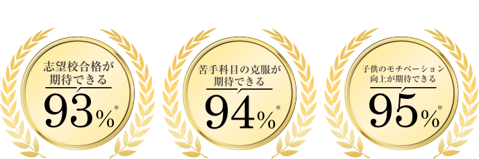
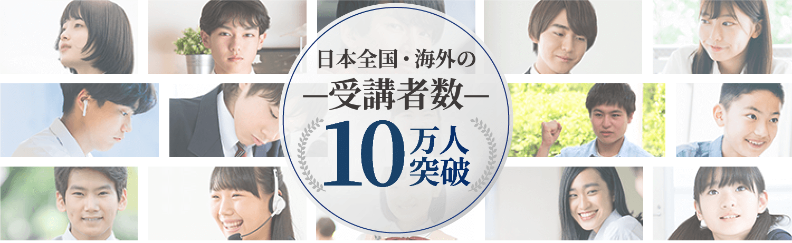
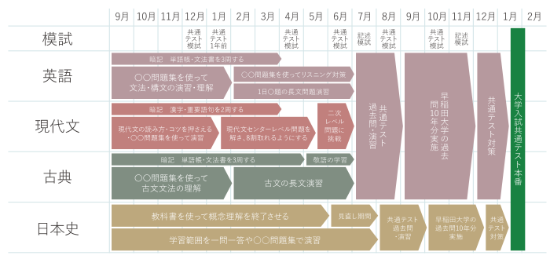
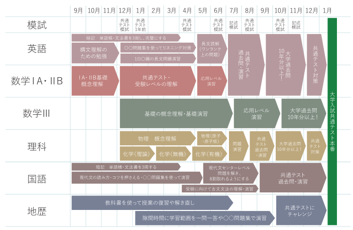
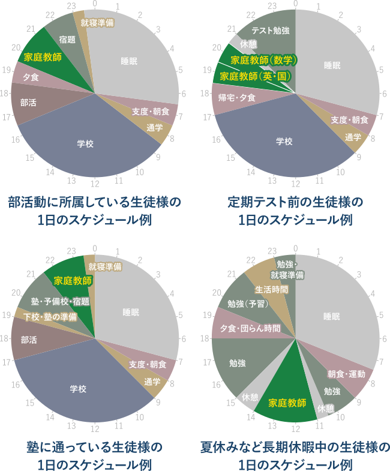
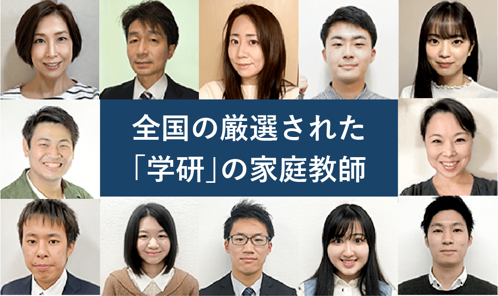
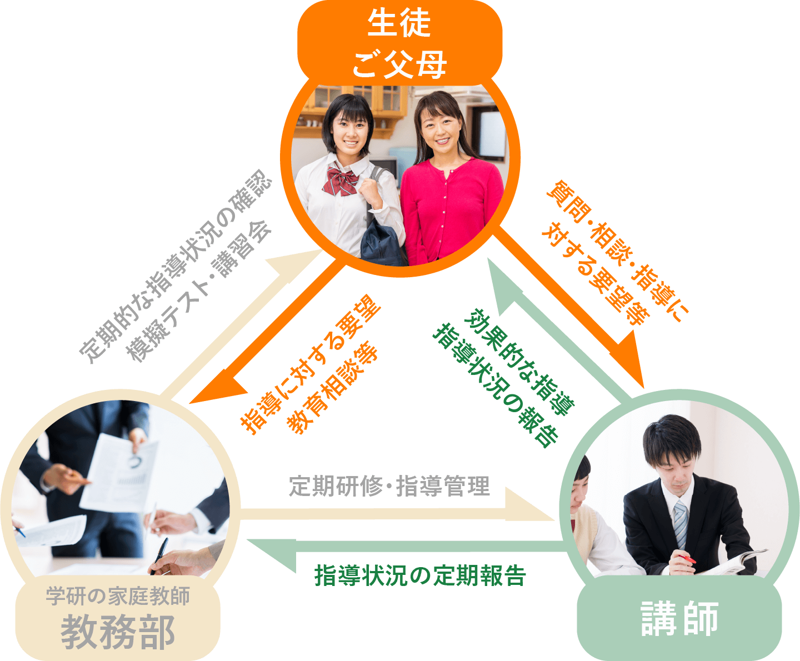

オンライン家庭教師で
いつでも、どこでも、
効率的に成績アップ!
※実施委託先：日本ビジネスリサーチ/調査期間：2023年2月22日～2月23日/調査方法：サービス情報を閲覧した上でのWEB上イメージ調査
調査対象：家庭教師サービスに興味があり塾または家庭教師サービスを利用したことがあるお子様をお持ちの保護者の方
331名参考イメージ



大学受験の合格実績
有名大学・難関大学への合格者続出!


-
難関国立大学合格実績
東京大学/京都大学/大阪大学/神戸大学/
北海道大学/東北大学/名古屋大学/
九州大学/東京工業大学/一橋大学/
東京外国語大学/東京学芸大学/
その他 国立大学医師薬学部 など多数

-
難関私立大学合格実績
慶應義塾大学/早稲田大学/上智大学/
東京理科大学/学習院大学/明治大学/
青山学院大学/立教大学/中央大学/
法政大学/国際基督教大学/関西学院大学/
関西大学/同志社大学/立命館大学 など多数
※当社調べ
※実績は過去累計です
※大学入学共通テストや国公立二次・私大対策にも対応しています。
部活や他の習い事と
勉強を両立したい
両親が不在時でも
勉強したい
家庭教師さんに
お茶の準備など
気を遣う
住んでいる地域に
自分にあう先生が
見つからない
オンライン授業で
集中できるか
不安
オンライン授業は
新しい機材の準備が
面倒だ
学研の家庭教師オンラインに
すべておまかせください!
家庭教師で選ぶなら、学研!
「学研にしてよかった!」という声、
おかげさまで、いま、増えています。
「学研」の家庭教師オンラインが
選ばれる3つのPoint
いつでも、どこでも、
遠くにいる先生でも
他のスケジュールに合わせて場所と時間が選べる！
両親が共働きで自宅にいないときでも安心です♪
住んでいる地域関係なく全国の先生から受講できる！
まるで隣にいるみたい
対話を大事にした指導をすることで、オンラインでも対面指導と同じように集中して受講いただけます。
おうちにある
スマホやパソコンですぐ
機材の指定はないので、新しく準備いただく必要はございません。おうちにあるスマホや、タブレット、パソコンですぐに受講できる！
「学研」家庭教師オンラインの
5つの強み
どこよりも厳選された
自慢の家庭教師陣
適性検査や面接などで「指導力・人物ともに合格」と判断された8％の人材のみを採用しています。お子様をしっかりと受け持つ責任感が強い自慢の講師陣です。
どこよりも満足度が高い
満足度98%のマッチング
学研の家庭教師は、全国規模ならではの安心感とスケールメリットが強み。「ただ家庭教師を紹介する」ではなく、一緒に目標に向かって頑張っていける先生、尊敬しながらも安心できる先生をマッチング。
その結果、「家庭」「講師」の双方から好評を得ており、
98%の会員様に満足していただけています。

どこよりも合格に直結した
オーダーメイドカリキュラム
受験校合格や成績向上を目標にした、一人ひとりに合った効率的な学習カリキュラムを作成。
「学研の家庭教師」は70年を超える歴史の学研グループの中で1983年に創業した業界のパイオニア。これまで10万人を超える指導実績があります。

一人ひとりの学習状況や習熟度に応じて、作成します!
※講師によって作成方法が異なる場合があります。
難関私立大学志望の生徒様の例

国公立大学志望の生徒様の例


柔軟なスケジュールで対応し、部活との両立も可能!

どこよりも徹底した
進捗管理、成果主義
目標達成までの学習管理を綿密に行うことで、
一人ひとりの学力をしっかりと向上!
専任の教務スタッフが、お子様の理解度、テストの結果などを分析し、生徒さんにピッタリ合った学習カリキュラムを随時見直します。

どこよりも差がつく
学習指導
デバイス・音声通信ソフト・教材は、
ご家庭にあるデバイスや教材でOK！
内的動機づけを促す指導で、「自分でできる」が「自分はできる」に変わっていき、自己肯定感を培っていきます。
だから、学研の家庭教師は
どこよりも差がつく!
さあ、次はあなたも!
まずは、資料請求からはじめてみませんか?
早く始めれば始めるほど、大きく差は開きます。
コース一覧・料金
学研の家庭教師は、安心の『月謝制』。
高額教材のセット販売などもございません。
-
レギュラーコース
- 勉強の興味付けや習慣化がしたい
- 学校や塾のフォローをしてほしい
- 苦手科目を克服したい
1時間あたり 4,290円（税込）～
-
セレクトコース
- 志望校出身や在学の先生
- 指導経験が豊富な先生から
指導を受けたい
1時間あたり 6,490円（税込）～
-
プロコース
- 合格実績が豊富な先生から
指導を受けたい - 短期間で成績向上したい
- 効率重視の指導を受けたい
1時間あたり 8,800円（税込）～
- 合格実績が豊富な先生から
「学研」の家庭教師だからできる！
対面とオンラインのハイブリット形式
対面とオンラインを
組み合わせて受講OK！
- テスト前や入試前だけ授業数を増やしたいときに！
- 対面講師が対応できない科目だけオンラインに！
- 宿題チェックや質問を週1回30分ほどだけオンラインに！
オンライン体験授業までの流れ

オンライン面談
お子さまの現状と、先生と授業内容に対するご要望をお聞かせください。また、受講時に使用される端末、インターネット環境についてお伺いいたします。
オンライン授業受講に際しご不安な点・ご不明な点がございましたら、お気軽にご質問ください。
教師のご紹介

当センターに在籍する厳選された家庭教師陣の中から、面談にてお伺いしたご要望に適う候補者を複数人選抜し お子さまへ最適な授業を行えるよう弊社教務スタッフとともに準備いたします。
さらに、候補者の中より適任と思われる第1候補者を選出しご紹介いたします。
オンライン体験指導
実際に授業を行う家庭教師の授業力と人柄をご確認ください。
※授業開始前にご家庭のオンライン接続と動作環境をテストさせていただきます。
体験授業を受講したからと言って、
ご入会を強くおすすめすることはありませんので
ご安心ください。
一人ひとりにベネフィットする教育を可能にするために
「学研」の家庭教師は講師の質にこだわります

１０万人の指導実績が証明する
信頼のトライアングル

「すべては子どもたちのために」それが私たち、学研・塾グループ共通の想いです。
そして、子どもたちに直に接するのは、先生 ―
つまり講師。登録数10万人超の豊富な講師陣から多様なニーズに対応します。
よくあるご質問
大切なお子様の勉強方法ですから不安なことも多いはずです。
その他、ご不明な点などございましたら、お気軽にお問い合わせください。
必要な機材はありますか？
パソコン・タブレット・スマートフォンのいずれかと、インターネット環境があればご受講可能です。音声通信ソフトにつきましては無料アプリのzoomを推奨しております。
体験授業の先生はその後も授業してくれますか？
はい、体験授業を行った先生がそのまま担当させていただきます。
指定の教材はありますか？
ありません。ご自宅にある教材をそのままご使用いただけます。家庭教師センターの中には高額教材を売りつける会社も少なくありませんが、学研の家庭教師では教材を指定することは一切ありません。
帰国子女受験を考えております。
海外でも受講できますか？
はい、可能です。東南アジアを中心に、世界各国の方々に受講いただいております。時差を考慮し家庭教師の選考を行いますのでご安心ください。